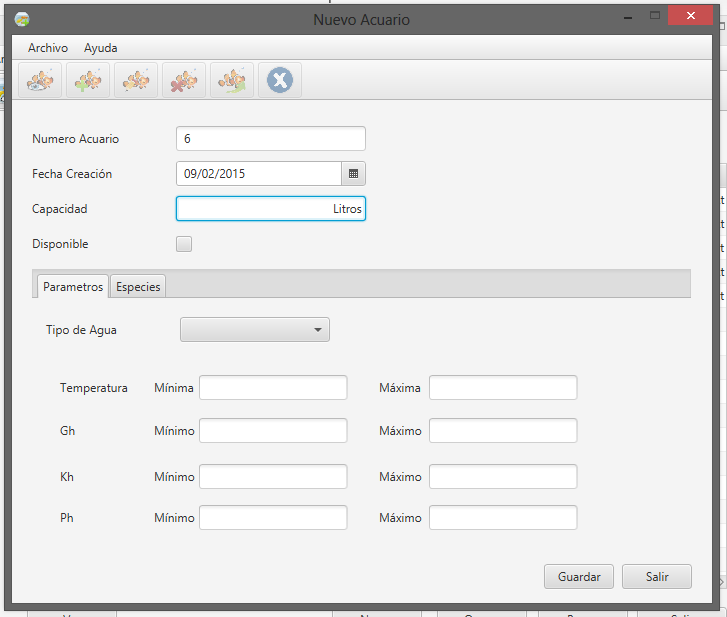

Cuando desee registrar un nuevo acuario en el sistema, para poder registrar los individuos que contiene, la incorporación o transferencia de nuevos individuos, y planificar diversas tareas sobre el mismo, deberá ingresar a ésta sección.
El número de acuario será gestionado por el sistema, al igual que la fecha de creación, que será la vigente al momento del alta.
Deberá registrar la capacidad (en LITROS), del acuario nuevo, y además, indicar si se encuentra DISPONIBLE desde que se realiza el alta.
Si un acuario se encuentra DISPONIBLE, implica que se podrán incorporar o transferir individuos de él o desde él, y que además, podrá ser objeto de diversas tareas planificadas, en caso contrario, se dice que el mismo está NO DISPONIBLE y sus datos permanecen guardados en el sistema.

En la pestaña PARÁMETROS, deberá completar los valores máximo y mínimo para cada uno de los parámetros indicados, considerando que el mínimo debe ser menor al máximo y que ambos deben ser valores positivos. Además, deberá indicar el tipo del agua del nuevo acuario.
IMPORTANTE: Complete los datos concientemente, sabiendo que son éstos y los de las especies cargadas los que el sistema emplea para permitir o denegar ciertas acciones sobre los acuarios, y para generar alertas cuando se registren valores fuera de los parámetros, como se verá más adelante.
En la pestaña ESPECIES, podrá registrar una cantidad inicial de individuos de alguna de las especies cargadas en el sistema, que se encuentre en el acuario desde el momento del alta, una vez que seleccione el botón "Elegir especie", y elija la que desee de la lista de disponibles, deberá COMPROBAR la compatibilidad de la especie y el acuario, si ésta es correcta, deberá indicar la cantidad de individuos en el campo siguiente y confirmar la incorporación seleccionando AGREGAR.
En la lista de abajo aparecerá la nueva incorporación realizada.
Una vez completados los datos del nuevo acuario, deberá confirmar los mismos, seleccionando la opción GUARDAR.
Si desea descartar el nuevo acuario, deberá elegir CANCELAR, en la pantalla principal de alta de acuarios.
Created with the Personal Edition of HelpNDoc: Full-featured EPub generator